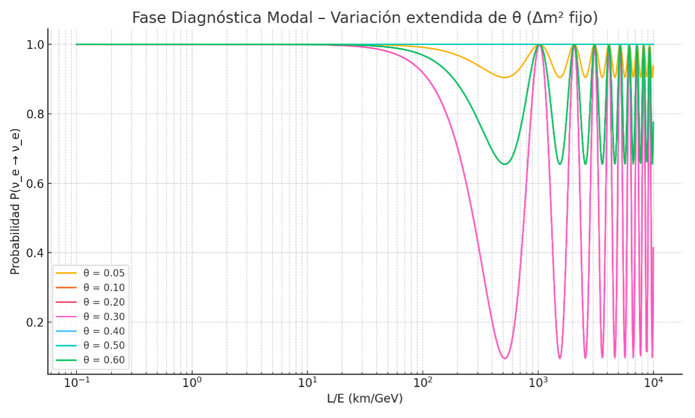
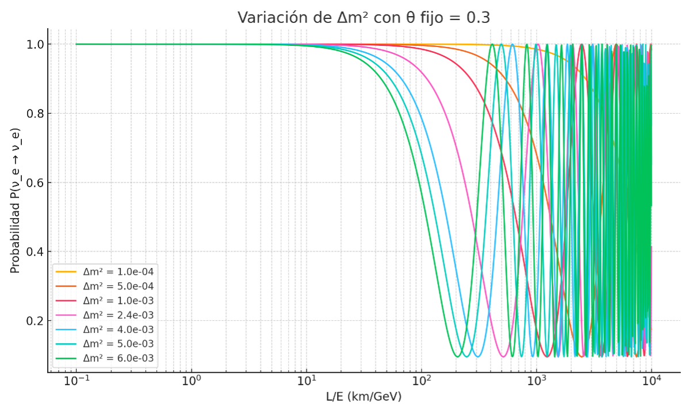

Fase Diagnóstica Modal – Modelo IE
Esta fase tiene como objetivo explorar y mapear la respuesta del Modelo de Iterancias Energéticas (IE) ante variaciones sistemáticas de sus parámetros clave modales: el ángulo de mezcla θ, la diferencia modal emergente Δm², y la constante estructural λ_IE. Estos parámetros determinan la dinámica de oscilación de modos energéticos internos y su manifestación en fenómenos como la oscilación de neutrinos o las frecuencias de remanentes cuánticos. Esta fase diagnóstica permitirá entender la sensibilidad del modelo, identificar zonas óptimas y preparar una futura calibración cuantitativa.
1. Parámetros explorados
2. Objetivo
Evaluar cómo afecta cada parámetro a la forma, fase, amplitud y periodicidad de las curvas de probabilidad modal. Este análisis nos permitirá entender el espacio de parámetros y establecer un marco sólido para futuras regresiones o comparaciones observacionales.
3. Resultados Iniciales
Se utilizarán gráficos comparativos con curvas generadas variando θ y Δm² en el dominio L/E (km/GeV), simulando la probabilidad de permanecer en un modo electrónico según la formulación IE.
4. Exploración 1 – Variación del ángulo θ
Se simuló la probabilidad modal \(P(\nu_e \rightarrow \nu_e)\) para distintos valores del ángulo de mezcla modal θ, manteniendo fijo el parámetro Δm² = 2.4 × 10⁻³ eV². El objetivo fue observar el efecto del acoplamiento modal sobre la forma y amplitud de la curva de oscilación.
La gráfica muestra que para valores pequeños de θ (por ejemplo, 0.05), las oscilaciones son muy suaves y con amplitud mínima, mientras que para valores más altos (hasta 0.6), las oscilaciones se hacen más profundas, con valles marcados que alcanzan casi P ≈ 0. La frecuencia de oscilación no se ve significativamente afectada, lo cual confirma que está dominada por Δm². El ángulo θ actúa como modulador de la 'intensidad modal' o del grado de interferencia entre modos internos.
Esta exploración confirma que el Modelo IE reproduce el comportamiento esperado de un sistema oscilante acoplado, donde la profundidad de modulación depende del grado de acoplamiento interno (θ), mientras que el ritmo temporal depende del desfase energético (Δm²).
5. Exploración 2 – Variación de Δm² para distintos valores de θ
Se realizó un barrido del parámetro Δm² manteniendo fijo el ángulo de mezcla θ, evaluando su efecto en la curva de probabilidad modal \(P(\nu_e \rightarrow \nu_e)\). Esta exploración se repitió para siete valores distintos de θ, desde 0.05 hasta 0.6, con el objetivo de identificar cómo influye Δm² en el ritmo de oscilación del sistema modal.
Los resultados muestran un comportamiento muy consistente entre los distintos casos: mientras que la amplitud de la oscilación se mantiene constante (controlada exclusivamente por θ), el valor de Δm² determina el momento en el que ocurren las caídas de probabilidad. Es decir, a mayor Δm², las oscilaciones aparecen antes, desplazando los valles hacia menores valores de L/E.
Esto concuerda con la interpretación física del Modelo IE: Δm² actúa como un marcador de la frecuencia modal emergente, acelerando el ritmo de interferencia destructiva entre modos internos. No modifica cuán profunda es la oscilación, sino cuán pronto se produce.
Figura: Variación de Δm² para θ fijo = 0.30.
La exploración conjunta de θ y Δm² permite establecer un marco claro de diagnóstico modal, donde θ regula la 'intensidad' de la oscilación y Δm² su 'ritmo'. Esta caracterización será clave en futuras fases de ajuste fino o validación frente a datos experimentales.
6. Exploración 3 – Influencia de la constante estructural λ_IE
La constante estructural emergente λ_IE fue introducida originalmente en el Modelo IE como un factor correctivo natural para ajustar la discrepancia entre la frecuencia modal teórica y la simulada en los remanentes cuánticos. Validada frente a eventos como GW190521 y el comportamiento interno del remanente, esta constante posee un valor emergente típico de λ_IE ≈ 9.
En esta fase diagnóstica, se exploró el efecto de modificar λ_IE en la curva de oscilación modal del tipo \(P(\nu_e \rightarrow \nu_e)\), manteniendo constantes los otros parámetros (θ = 0.3 y Δm² = 2.4×10⁻³ eV²). Se observó que λ_IE actúa de forma análoga a Δm², modificando la frecuencia con la que ocurren los mínimos de oscilación: a mayor λ_IE, los valles aparecen antes. Sin embargo, la amplitud de las oscilaciones no se ve afectada por λ_IE, sino únicamente por θ.
Figura: Influencia de λ_IE en la oscilación modal con θ = 0.3 y Δm² = 2.4×10⁻³ eV².
Aunque λ_IE y Δm² escalan juntos la oscilación, no son equivalentes físicamente. En el Modelo IE, Δm² representa la diferencia modal observable emergente, mientras que λ_IE es una constante interna estructural que modula cómo se manifiestan esas diferencias hacia el exterior. La relación entre ellos puede expresarse como: Δm²_observable ≈ λ_IE × Δm²_modal Esto implica que cambiar λ_IE altera la escala de la masa emergente, pero no su origen interno. Es decir, λ_IE actúa como el medio estructural desde el que surge la oscilación, mientras que Δm² determina el modo específico dentro de esa estructura.
Trabajan a la misma escala por coherencia física: si no lo hicieran, el sistema observable sería inestable o errático. Pero no son intercambiables: uno es estructural (λ_IE), el otro proyectivo (Δm²).
Esta conclusión reafirma que el Modelo IE tiene una capa física interna que regula las oscilaciones observables, ofreciendo así una interpretación profunda de fenómenos tradicionalmente tratados como probabilísticos puros.